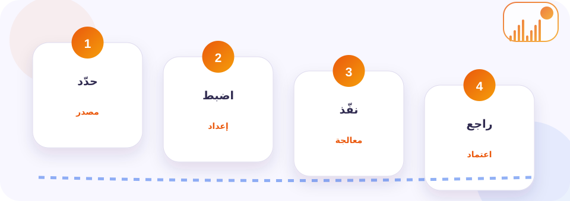
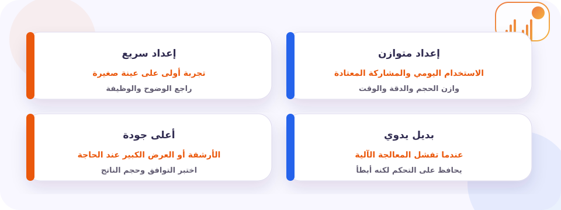
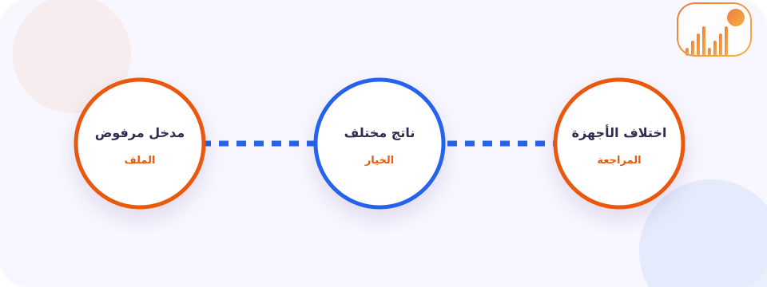

الغرض العملي وحدود الاعتماد
تحويل الميلادي إلى هجري أداة تساعد على عرض المقابل الهجري لتاريخ ميلادي مع اسم الشهر واليوم. فائدتها ليست في إنهاء الخطوة التقنية وحدها، بل في الوصول إلى يوم وشهر وسنة هجرية مع المقابل الميلادي يخدم غرضًا واضحًا ويمكن مراجعته. يضع هذا الدليل فهم التاريخ الهجري الحالي أو تاريخ مختار دون إخفاء طريقة الحساب في المركز، ثم يشرح المدخل والإعداد والنتيجة وحدود الاعتماد بلغة عملية.
الحد الأهم هو أن الحساب البرمجي تقديري وقد يختلف عن إعلان الجهات الشرعية أو الرسمية، ولا ينبغي اعتماده وحده لإثبات موعد ملزم. افصل بين نجاح المعالجة وبين أمان المحتوى أو ملكيته أو صلاحيته الرسمية، ولا ترفع بيانات خاصة أو تعيد استخدام عمل الغير من دون إذن.
ستتعلم كيف تضبط التقويم المستخدم والمنطقة الزمنية واحتمال اختلاف بداية الشهر، وتنفذ العملية على عينة ممثلة، وتختبر يوم وشهر وسنة هجرية مع المقابل الميلادي في البيئة التي سيستخدم فيها بدل الحكم من المعاينة فقط.
في سياق تحويل الميلادي إلى هجري، استخدم محتوى تملكه أو تملك إذنًا لمعالجته، ولا تتجاوز إعدادات الخصوصية أو الحماية. احتفظ بالأصل، وشارك الحد الأدنى من البيانات، وافحص الروابط قبل فتحها.
ما وراء المعالجة؟
تبدأ المعالجة من عرض المقابل الهجري لتاريخ ميلادي مع اسم الشهر واليوم. يقرأ المحرك المدخل ويتحقق من بنيته، ثم يطبق الإعدادات ويعرض الناتج النهائي. قد تتغير النتيجة بحسب المتصفح والجهاز والصيغة والمنطقة الزمنية أو مصدر البيانات، لذلك يجب توثيق البيئة والإعداد وعدم افتراض أن المعاينة تمثل كل الحالات.
يشرح اختلاف حساب التاريخ الهجري المفهوم الذي تحتاجه قبل لمس الإعدادات؛ فالتعريف الصحيح يمنع تفسير الناتج خارج غرضه.
في هذه المرحلة يساعدك تأثير المنطقة الزمنية في الموعد على قراءة المدخل أو الصيغة ضمن سياقها بدل الاعتماد على الاسم أو الامتداد وحده.
عند مراجعة الناتج يفيد طريقة عمل المؤقت التنازلي في كشف اختلاف قد لا يظهر داخل معاينة الأداة، خصوصًا بين الأجهزة أو طرق العرض.
اكتب هدفك بجملة واحدة: فهم التاريخ الهجري الحالي أو تاريخ مختار دون إخفاء طريقة الحساب. بعد ذلك استخدم سيناريو واقعيًا مثل معرفة التاريخ الهجري الموافق لموعد ميلادي في بلد معين قبل نشر دعوة. إذا لم تستطع تحديد التقويم المستخدم والمنطقة الزمنية واحتمال اختلاف بداية الشهر فتوقف عند المعاينة واجمع المعلومة قبل الحفظ أو المشاركة.
أربع خطوات لنتيجة واضحة
ابدأ بحالة محدودة تمثل «معرفة التاريخ الهجري الموافق لموعد ميلادي في بلد معين قبل نشر دعوة». اكتب قبل التشغيل أن غرضك هو فهم التاريخ الهجري الحالي أو تاريخ مختار دون إخفاء طريقة الحساب، ثم قرر مسبقًا كيف ستعرف أن النتيجة صالحة بدل الحكم عليها من سرعة المعالجة.

حدد الهدف والحق في الاستخدام
حضّر المدخل المرتبط بعرض المقابل الهجري لتاريخ ميلادي مع اسم الشهر واليوم من مصدر تملكه أو لديك إذن واضح لاستخدامه. احتفظ بالأصل منفصلًا، ودوّن الإعداد الذي ستغيره حتى تستطيع تفسير أي فرق بعد التنفيذ.
اضبط المدخل والإعداد
راجع المدخل حرفيًا قبل المتابعة، ثم اختر الإعداد الذي يقود إلى يوم وشهر وسنة هجرية مع المقابل الميلادي. غيّر عاملًا واحدًا فقط؛ فالجودة الأعلى أو الملف الأصغر لا يكونان أفضل إذا أفسدا الغرض الأساسي.
نفّذ وراقب الرسالة
أثناء تنفيذ تحويل الميلادي إلى هجري: دليل الاستخدام والفحص راقب الرسالة وحالة التقدم. امنح الإذن المطلوب فقط للوظيفة التي تستخدمها، ولا تكرر النقر أو الرفع إذا تأخر الرد؛ انتظر النتيجة الأولى ثم شخّص السبب بهدوء.
اختبر الناتج قبل المشاركة
تحقق من أن الناتج يطابق ما توقعت مراجعته. افتحه في بيئة ثانية أو امسحه أو شغله حسب نوعه، وقارن بالسؤال الأصلي قبل الحفظ أو النشر.
بعد التنفيذ، قارن الناتج بالأصل وبالغرض. افتحه أو امسحه أو شغله حسب نوعه، وتحقق من القيمة أو الملف الناتج. الحساب البرمجي تقديري وقد يختلف عن إعلان الجهات الشرعية أو الرسمية، ولا ينبغي اعتماده وحده لإثبات موعد ملزم. احتفظ بنسخة يمكن العودة إليها إن احتجت ضبطًا جديدًا.
مقارنة السيناريوهات
عند تطبيق ذلك على تحويل الميلادي إلى هجري، تتغير أفضل الإعدادات حسب الوجهة والجهاز والخصوصية. المسار السريع مناسب للتجربة، والمتوازن للاستخدام المعتاد، والعالي للأرشفة أو العرض الكبير. أما البديل اليدوي فيصبح أفضل عندما تحتاج تحكمًا أو إثباتًا أو مراجعة لا توفرها الأداة.

| المسار | متى يناسب؟ | نقطة المراجعة |
|---|---|---|
| إعداد سريع | تجربة أولى على عينة صغيرة | راجع الوضوح والوظيفة |
| إعداد متوازن | الاستخدام اليومي والمشاركة المعتادة | وازن الحجم والدقة والوقت |
| أعلى جودة | الأرشفة أو العرض الكبير عند الحاجة | اختبر التوافق وحجم الناتج |
| بديل يدوي | عندما تفشل المعالجة الآلية | يحافظ على التحكم لكنه أبطأ |
عمليًا مع تحويل الميلادي إلى هجري، ابدأ بالمسار المتوازن ثم غيّر عاملًا واحدًا. إذا حسّنت الجودة، راقب الحجم والتوافق والوقت. وإذا قللت الحجم، افحص النص والحواف والصوت أو قابلية المسح بدل الاكتفاء برقم أصغر.
اختبار الجودة والملاءمة
اختبر الناتج في حالة سهلة وأخرى تمثل «معرفة التاريخ الهجري الموافق لموعد ميلادي في بلد معين قبل نشر دعوة». افتحه على جهاز أو تطبيق ثانٍ، وسجّل الفرق الذي يهم المستخدم فعلًا لا الاختلاف الشكلي وحده.
وقبل المشاركة، استخدم استخدام الطابع الزمني في حفظ اللحظة لفهم القيد المرتبط بالملكية أو الجودة أو التوافق واتخاذ قرار صريح.
استخدم السيناريو التالي: هذا المثال العملي. راقب الرسالة والوقت والناتج، ثم اطلب من شخص آخر تنفيذ الوظيفة دون شرح إضافي. إذا لم يفهم المصدر أو الإذن أو الإعداد، حسّن تسمية الملف وتعليمات المشاركة.
- المدخل مشروع وواضح
- الإعداد موثق
- الناتج مختبر
- الخصوصية محفوظة
ولأن موضوعنا هو تحويل الميلادي إلى هجري، يجب أن يذكر قرار الاعتماد ما اختبرته وما لم تختبره. لا تقل إن الناتج مضمون أو رسمي أو خالٍ من المخاطر إذا كان الفحص تقنيًا فقط. هذه اللغة الدقيقة ترفع الثقة وتحمي المستخدم.
تشخيص الأعطال دون تخمين
إذا تعثر تحويل الميلادي إلى هجري: دليل الاستخدام والفحص، افصل بين مشكلة المدخل والإذن والشبكة والصيغة النهائية. استخدم عينة صغيرة تعيد الخطأ، ثم راجع عاملًا واحدًا في كل محاولة.

الأداة لا تقرأ المدخل أو ترفضه
تحقق من الصيغة والرابط والمسافات والأذونات. ابدأ بـ المعلومات التي يجب تثبيتها، ثم اختبر عينة بسيطة تعرف أنها تعمل قبل افتراض وجود عطل عام.
الناتج مختلف عما توقعته
قارن الإعداد والسياق. هذا القيد. أعد التجربة بتغيير عامل واحد، واحفظ النسختين حتى ترى سبب الفرق بوضوح.
تعمل الصفحة على جهاز ولا تعمل على آخر
في الحالة الخاصة بتحويل الميلادي إلى هجري، راجع دعم المتصفح والأذونات والخطوط أو الترميزات والصيغة النهائية. استخدم إصدارًا حديثًا واختبر دون إضافات حجب مؤقتًا مع عدم تعطيل الحماية على محتوى مجهول.
توقفت العملية أو تأخر التحديث
أبقِ التبويب ظاهرًا، تحقق من الشبكة وحجم المدخل، ثم أعد المحاولة بعينة أصغر. لا تكرر النقر أو الرفع لأن ذلك قد يبدأ عمليات متوازية.
لتحسين نتيجة تحويل الميلادي إلى هجري، إذا بقي الخطأ، احفظ اسم المتصفح والجهاز ونوع المدخل ورسالة الأداة. لا تشارك الملف الخاص أو رابط الحساب المقيد عند طلب المساعدة؛ استخدم عينة منزوعة البيانات تعيد المشكلة.
من التجربة إلى الاعتماد
حوّل الهدف المحدد أعلاه إلى إجراء قصير يمكن لشخص آخر مراجعته: مصدر مشروع، غرض مكتوب، إعداد محفوظ، ونتيجة مختبرة. هكذا تستطيع تفسير أي اختلاف دون تخمين.
ابدأ بعينة تمثل الواقع
استخدم حالة مثل: هذا المثال العملي. يجب أن تكون كافية لكشف مشكلات العرض أو الصيغة من دون تعريض محتوى حساس أو عمل أصلي للخطر.
وثق الإعداد والنسخة
سجّل التقويم المستخدم والمنطقة الزمنية واحتمال اختلاف بداية الشهر، وامنح الناتج اسمًا يوضح النسخة والتاريخ. وعند التعامل مع محتوى اجتماعي، احتفظ بالمصدر وحالة الإذن مع الملف حتى لا ينفصل عن سياقه.
اعتمد بحدود معلنة
لا تعتمد النتيجة قبل اختبارها في وجهتها الفعلية. الحد الجوهري هنا هو أن الحساب البرمجي تقديري وقد يختلف عن إعلان الجهات الشرعية أو الرسمية، ولا ينبغي اعتماده وحده لإثبات موعد ملزم. اذكر هذا القيد بوضوح عند التسليم بدل تقديم النسخة التقنية كضمان مطلق.
أُعد دليل تحويل الميلادي إلى هجري: دليل الاستخدام والفحص بالرجوع إلى المواصفات ووثائق المتصفحات والمنصات والمصادر الرسمية المرتبطة بالمهمة. فُصل نجاح التنفيذ عن الملكية والخصوصية، وتمت المراجعة التحريرية والتقنية في 23 يوليو 2026.
الأسئلة الشائعة عن تحويل التاريخ من ميلادي إلى هجري
هل تحويل التاريخ من ميلادي إلى هجري يعمل على الهاتف؟
نعم عندما يدعم المتصفح الوظيفة والصيغة المطلوبة، لكن الكاميرا والحافظة والتنبيهات ومعالجة الملفات قد تتطلب إذنًا أو تتأثر بذاكرة الجهاز.
هل تحتفظ الأداة بجودة المدخل كاملة؟
يعتمد ذلك على نوع العملية والإعداد والصيغة. راجع النقاط الحساسة، وافتح الناتج بالحجم الحقيقي بدل الاعتماد على المعاينة المصغرة.
هل النتيجة آمنة أو قانونية تلقائيًا؟
لا. نجاح التقنية لا يثبت أمان الرابط أو حق استخدام المحتوى. افحص المصدر واحترم الخصوصية والترخيص وشروط المنصة قبل الحفظ أو النشر.
متى أستخدم بديلًا يدويًا؟
عندما تكون الدقة أو الهوية أو الوثيقة الرسمية أهم من السرعة، أو عندما لا تدعم الأداة الصيغة أو اللغة أو إعداد الخصوصية المطلوب.
كيف أعرف أن العملية نجحت؟
تعرف أن العملية نجحت عندما يصبح يوم وشهر وسنة هجرية مع المقابل الميلادي صالحًا في البيئة المقصودة ويخدم السؤال الذي بدأت منه. ظهور زر الحفظ أو اكتمال الشريط لا يكفي؛ اختبر الناتج كما سيفعل المستلم.
جرّب تحويل الميلادي إلى هجري على عينة آمنة
ابدأ بحالة «معرفة التاريخ الهجري الموافق لموعد ميلادي في بلد معين قبل نشر دعوة» على عينة تملكها. بعد المراجعة، احفظ نسخة العمل مع المصدر والإعداد حتى تتمكن من تحسينها لاحقًا من دون فقدان السياق.
استخدام تحويل الميلادي إلى هجري